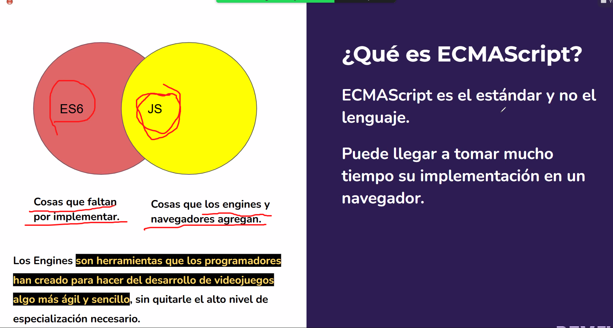
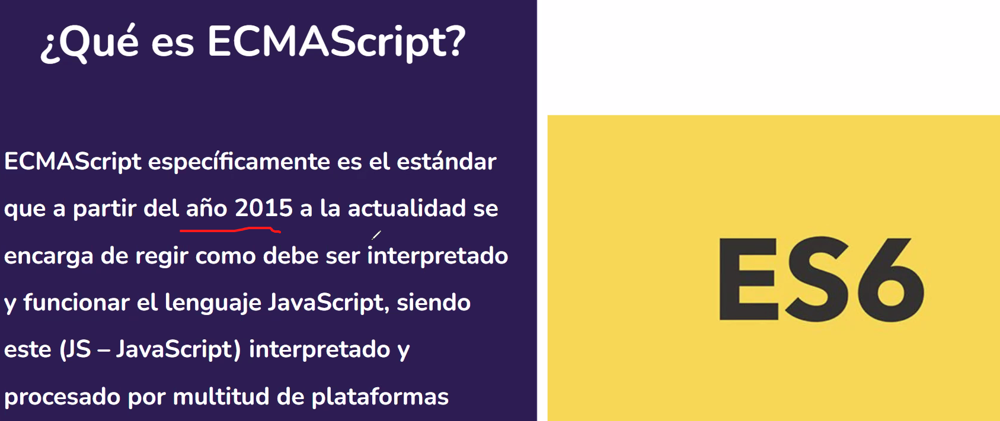
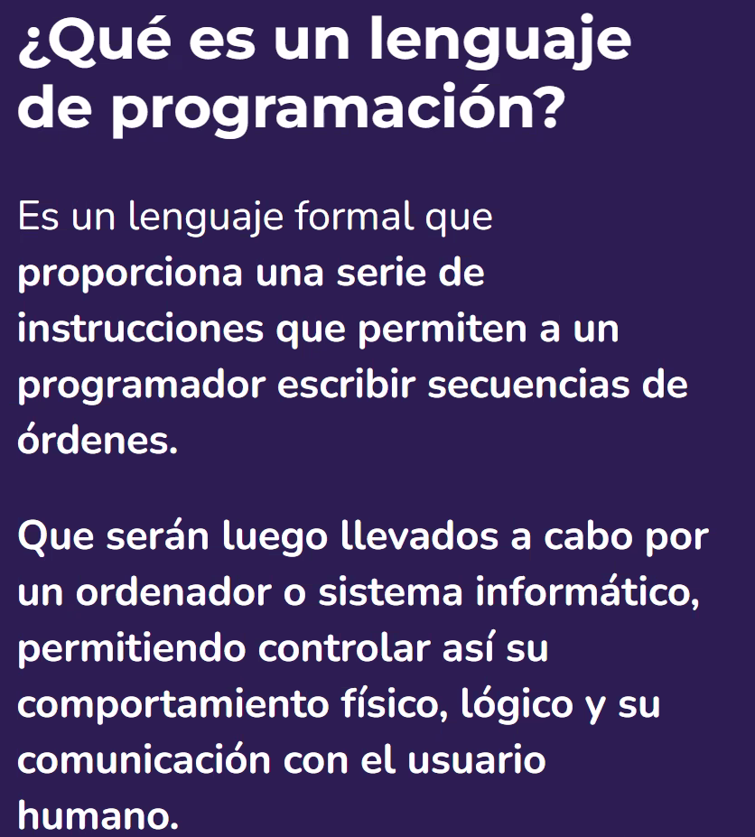
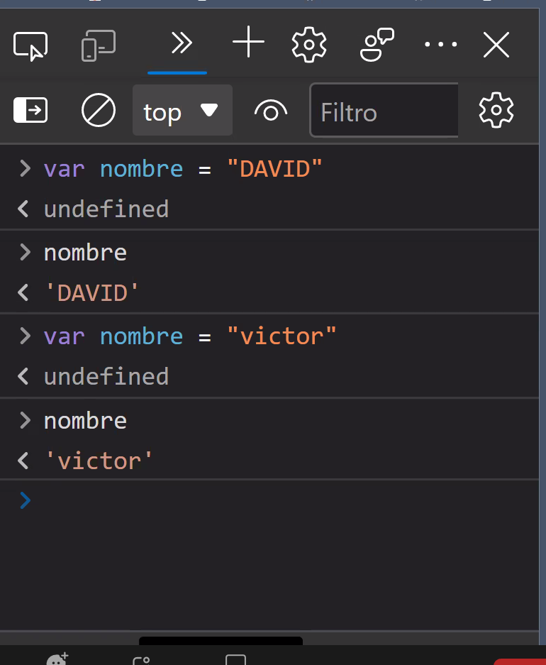
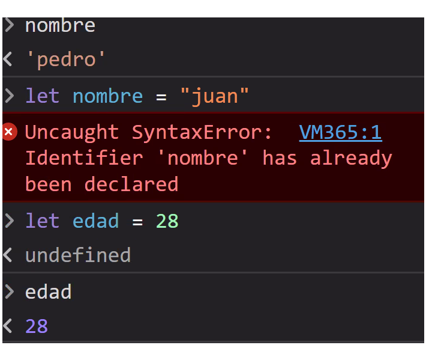
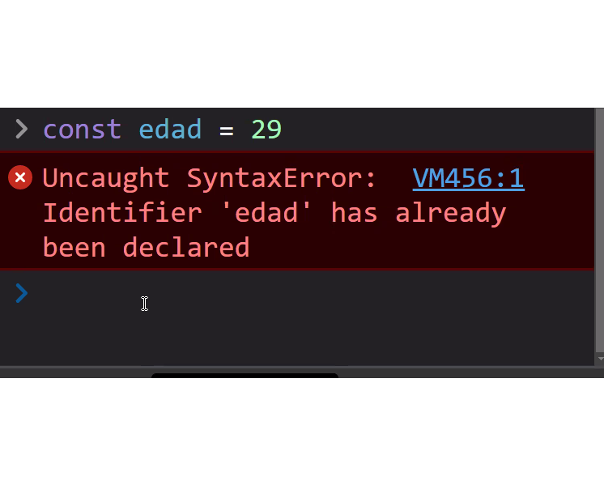
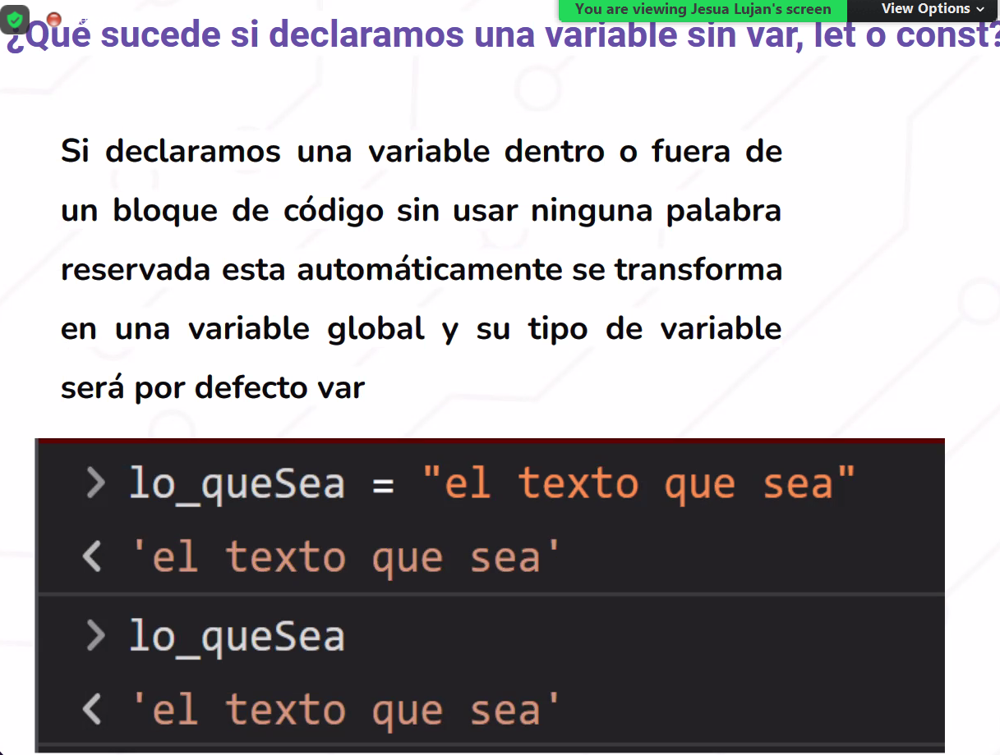
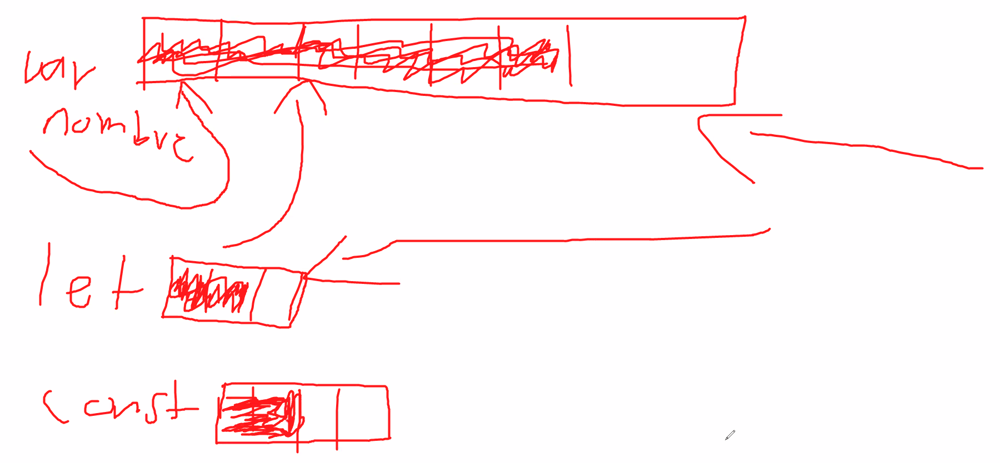

Es tan popular que: NODEJS puede interpretarlo de manera nativa en cualquier navegador
Ecma International: organizacion sin fines de luchro qeu regula el funcionanmeitno de muchos estandares a nivel mundial
Tecnologia DOM en donde cualquir navegador entiende Javascript..Primer version ECMA-262 BAJO LA ISO /IEC 16262
ecmaScript versiones 1 a 6, habla de compatibilidad. De la 6 en adelante se le dan mas herramientas al lengujae de programacion y una de ellas fue la declaracion de variables
LAs versiones tardan tiempo en aplicarse a los navegadores web, Ecma ayuda a la implementacion de las nuevas versiones de Javascript
Por temas de compatibilidad no siempre es bueno utilizar diferentes tipso de lenguajes al mismo tiempo
BUSCAR LA DIFERENCIA ENTRE UN INTERPRETE Y UN CODIFICADOR
Cuando no existia ES6 todos declarabamos con var, pero el problema es que se sobreescribia, y por tanto no se podian guardar los datos que yo queria
Leguaje de programacion: es un lenguaje que proporciona una serie de instrucciones
Un poco de historia; en HTML 4 habia un problema: divitis. Para todo usabamso div..imagnes, texto, etc. Al usar soo div era una mal practica de programacion. EN version de HTML 5 aprace el HTMl semantico (footer, aside, header.
Así mismo pasasba en JS, se utilizaba var para todo. En tonces si utilizaba var nombre = Juan; y despues var nombre = Martin; se sobreescribia y hacia una variable global. Ademas de qeu podia reinicializar mi variable.
Entonces en eel ecmaScript6 nace let y nace const. Y con eso evitar el desmadre con las variables. Coinesto salvaguardamso la informacion y evitamso la reinicializacion de mis variables.
 Dos tipos: el global y el local
{let nombre= 'Juna'} se habla de scope local y es comun ver dentre de esas llaves un let; las llaves protegen mis datos, let ocupara mnor porcion de memoria qeu lo utiliza var.
const es una constante y su valodr no va a cmabiar y tambien ocupara menor pocion de memoria a diferencia de var.
en la actualidad utilizar var para todo se considera una mala practica
Todo lo qeu esta fuera son Scope globales.
Ten cuidado con escribir por ejemplo: apellido; pues Js lo tomara como una variable global y le asignara por default var.
Es muy comun ver a let en un Scope local y a const en un Scope global. Es cuando se termina el bloque, se borra del espacio de memoria, por tanto ahorramos RAM
SE usa para guardar datos muy significativos, y utiliza una peqeuña porcion de memoria
Por convencion se escriben generalmente con mayusculsa